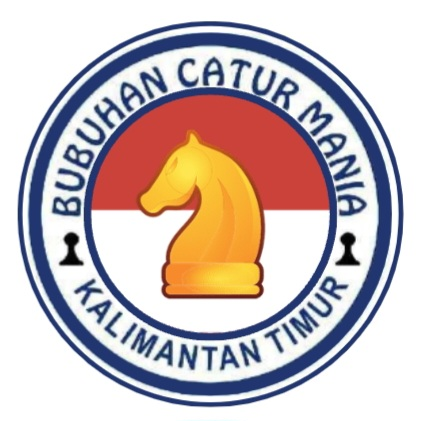
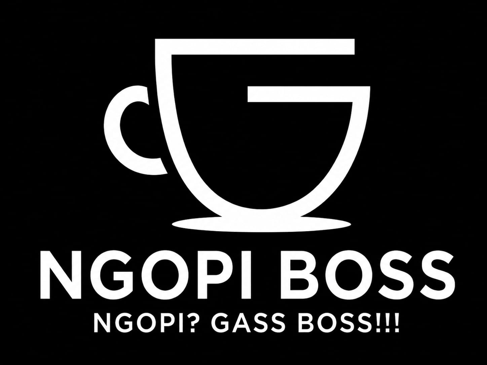

🎯 Puzzle Catur Hari Ini

Tantangan: Putih jalan, menang

Liga Catur BCM 2026 adalah ajang internal pembinaan catur di Kalimantan Timur. Sistem klasemen dan rating yang digunakan bersifat internal, bukan rating resmi FIDE. Tujuan utama liga ini adalah memberi kesempatan atlet untuk berproses, berkembang, dan merasakan pengalaman bertanding, bukan semata-mata mengejar hadiah.

Belajar, Berlatih, Bertanding, meraih prestasi tertinggi
| No | Nama | Status |
|---|
Petunjuk: Tambahkan pemain baru di tabel di bawah. Ganti [Nama] dan [Rating]. Tabel akan otomatis urut rating besar → kecil.
| No | Nama | Rating Awal |
|---|---|---|
| 1 | pemain 1 | 1430 |
| 2 | pemain 2 | 1320 |
| No | Nama | Rating |
|---|---|---|
| 1 | Hidayat Nur Rahim | 1620 |
| 2 | Akbar Pradana | 1570 |
| 3 | Vino Febriant | 1555 |
| 4 | Vincent Farliant | 1508 |
| 5 | Muhammad Syafiq Syadidul Azmi | 1490 |
| 6 | Muhammad Akhdan Rizki | 1432 |
| 7 | Buya Altafian Attaqi | 1407 |
| No | Nama | Poin S1 | Poin S2 | Total |
|---|---|---|---|---|
| 1 | Vincent Farliant | 4,5 | 3,5 | 8 |
| 2 | Vino Febriant | 4 | 3,5 | 7,5 |
| 3 | Muhammad Syafiq Syadidul Azmi | 4,5 | 2,5 | 7 |
| 4 | Buya Altafian Attaqi | 3,5 | 2,5 | 6 |
| 5 | Muhammad Akhdan Rizki | 3,5 | 1 | 4,5 |
| 6 | Akbar Pradana | 0 | 3,5 | 3,5 |
| 7 | Jericho Khenni Pinontoan | 3,5 | 0 | 3,5 |
| 8 | Alim Riski Dzuhdi | 3,5 | 0 | 3,5 |
| 9 | Mikail Fabian | 3 | 0 | 3 |
| 10 | Ary Pratama | 3 | 0 | 3 |
| 11 | Muhammad Azib Wardhana | 2 | 0 | 2 |
| 12 | Hidayat Nur Rahim | 0 | 2 | 2 |
| 13 | Ihsan Abdul Madani | 1 | 0 | 1 |
*Faktor K = 30"
| No | Nama | Rating Awal |
|---|---|---|
| 1 | pemain 1 | 1170 |
| 2 | pemain 2 | 1100 |
| No | Nama | Rating |
|---|---|---|
| 1 | Hadi Wijaya Jaya | 1879 |
| 2 | Elnathan Robert Sie | 1790 |
| 3 | La Yusron Nur Khoir | 1750 |
| 4 | Muhammad Gusti Fahri | 1730 |
| No | Nama | Poin S1 | Poin S2 | Total |
|---|---|---|---|---|
| 1 | Elnathan Robert Sie | 3,5 | 5,5 | 9 |
| 2 | Hadi Wijaya Jaya | 3,5 | 3,5 | 7 |
| 3 | La Yusron Nur Khoir | 0 | 5 | 5 |
| 4 | Muhammad Gusti Fahri | 0 | 3,5 | 3,5 |
| 5 | Dylan Shacio Wijaya | 3,5 | 0 | 3,5 |
| 6 | Hayden Nursalim | 3,5 | 0 | 3,5 |
| 7 | Al Hafidz Fuad | 1 | 0 | 1 |
| 8 | Narraya Addkhil Dohang | 0 | 0 | 0 |
*Faktor K = 20"
Rencana divisi lanjutan untuk pemain dengan kekuatan maksimal di masa depan.
Divisi ini disiapkan sebagai target pengembangan jangka panjang liga Pro
Sebagai bagian dari strategi peningkatan kualitas, pemain senior berpengalaman juga akan disisipkan dalam divisi ini.
Tujuannya bukan hanya untuk menambah daya saing liga, tetapi juga memberikan transfer pengalaman langsung kepada pemain muda.Dengan adanya kehadiran para senior, diharapkan lahir atmosfer kompetisi yang lebih ketat, sehat, sekaligus menjadi laboratorium pembinaan nyata — di mana pemain junior bisa belajar langsung dari mereka yang lebih matang.
| No | Glr | Nama | Rating Awal |
|---|---|---|---|
| 1 | AGM | Muhammad Ali Yusni | 2200 |
| 2 | AIM | Astian Dana Ahadda | 2200 |
| 3 | AIM | Abdul Gafur | 2200 |
| 4 | NM | Ambo Uke | 2200 |
| 5 | Hamdani | 2200 |
*Akan dimulai pada musim ke 2
| No | Nama | Poin | Rating Baru |
|---|---|---|---|
| 1 | [Nama Peserta 1] | 0 | 2200 |
| 2 | [Nama Peserta 2] | 0 | 2200 |
| 3 | [Nama Peserta 3] | 0 | 2200 |
*Faktor K = 10"
Tantangan: Putih jalan, menang
Hubungi panitia berikut untuk pendaftaran:
Liga ini didukung oleh: